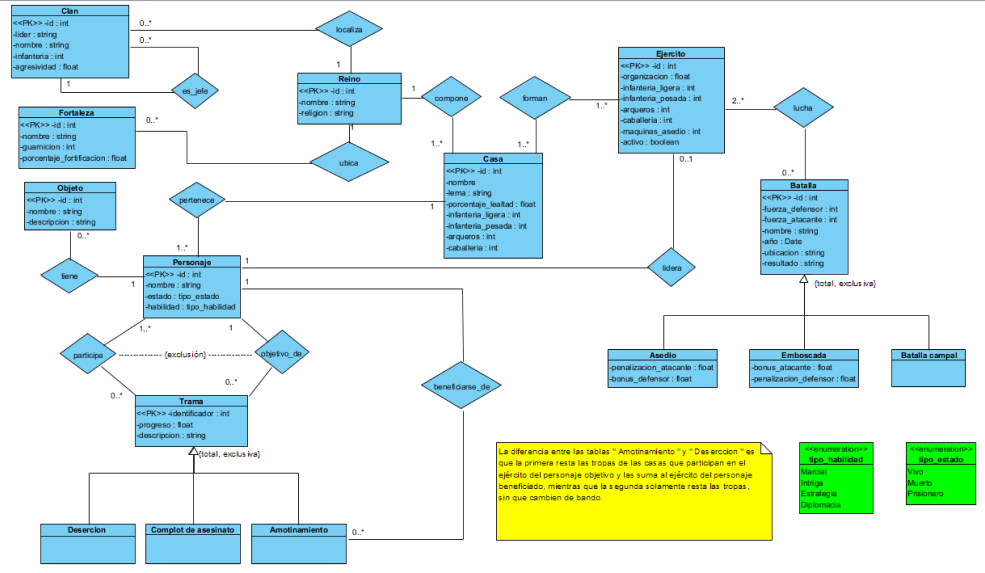
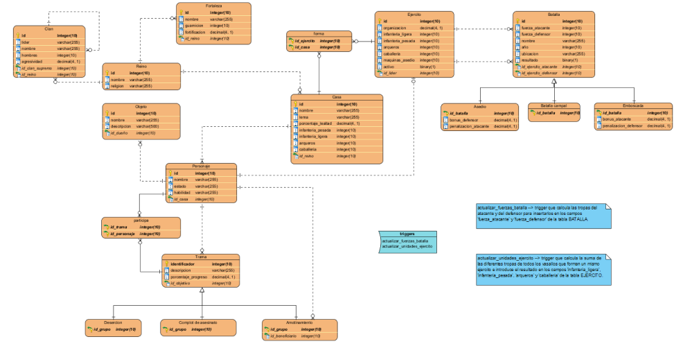

DISEÑO DE LA BASE DE DATOS
- Tabla Reino: Almacena información básica sobre los reinos, como su nombre y religión.
- Tabla Fortaleza: Describe las fortalezas dentro de un reino, con detalles como la guarnición, fortificación y el reino al que pertenece.
- Tabla Clan: Representa los clanes dentro de un reino, con información sobre su líder, nombre, número de miembros y agresividad.
- Tabla Casa: Define las casas nobles dentro de un reino, con detalles como el lema, porcentaje de lealtad, y el número de diferentes tipos de unidades militares que poseen.
- Tabla Personaje: Contiene información sobre los personajes presentes en el mundo, incluyendo su nombre, estado (vivo, muerto o prisionero), habilidades y a qué casa pertenecen.
- Tabla Ejército: Describe los ejércitos presentes en el mundo, con información sobre su organización, composición y liderazgo.
- Tabla Forma: Establece la relación entre los ejércitos y las casas nobles a las que están afiliados.
- Tabla Batalla: Registra información sobre las batallas que tienen lugar, incluyendo las fuerzas involucradas, ubicación y resultado.
- Tablas Específicas de Batallas: Estas tablas especializadas como batalla_campal, emboscada y asedio contienen detalles específicos sobre ciertos tipos de batallas y sus características.
- Tabla Objeto: Almacena información sobre objetos que pueden ser poseídos por los personajes.
- Tabla Trama: Define tramas que ocurren en el mundo, con detalles sobre su progreso y objetivos.
- Tabla Participa: Establece la relación entre los personajes y las tramas en las que participan.
- Tablas Específicas de Tramas: Como complot_asesinato, desercion y amotinamiento, estas tablas especializadas representan diferentes tipos de tramas y sus detalles específicos.

- Reino (id, nombre, religion): Cada registro en esta tabla representa un reino con un identificador único, nombre y religión.
- Fortaleza (id, nombre, guarnicion, fortificacion, id_reino): Esta tabla almacena información sobre las fortalezas, con detalles como su nombre, tamaño de guarnición, nivel de fortificación y la clave externa que vincula cada fortaleza a un reino específico.
- Clan (id, lider, nombre, hombres, agresividad, id_reino, id_clan_supremo): Describe los clanes dentro de un reino, con detalles sobre su líder, nombre, número de miembros, agresividad y su afiliación al reino y al clan supremo si lo tienen.
- Casa (id, nombre, lema, porcentaje_lealtad, infanteria_ligera, infanteria_pesada, arqueros, caballeria, id_reino): Define las casas nobles dentro de un reino, con detalles sobre su nombre, lema, nivel de lealtad, y la composición de sus fuerzas militares.
- Personaje (id, nombre, estado, habilidad, id_casa): Contiene información sobre los personajes del mundo, incluyendo su estado (vivo, muerto o prisionero), habilidades y la casa noble a la que pertenecen.
- Ejército (id, organizacion, infanteria_ligera, infanteria_pesada, arqueros, caballeria, maquinas_asedio, en_activo, id_lider): Esta tabla describe los ejércitos presentes en el mundo, con detalles sobre su organización, composición y liderazgo.
- Forma (id_ejercito, id_casa): Establece la relación entre los ejércitos y las casas nobles a las que están afiliados.
- Batalla (id, fuerza_atacante, fuerza_defensor, nombre, año, ubicacion, resultado, id_ejercito_atacante, id_ejercito_defensor): Registra información sobre las batallas que tienen lugar, incluyendo las fuerzas involucradas, ubicación y resultado.
- Objeto (id, nombre, descripcion, id_dueño): Almacena información sobre objetos que pueden ser poseídos por los personajes.
- Trama (identificador, descripcion, porcentaje_progreso, id_objetivo): Define tramas que ocurren en el mundo, con detalles sobre su progreso y objetivos.
- Participa (id_personaje, id_trama): Establece la relación entre los personajes y las tramas en las que participan.
- Complot_Asesinato (id_trama): Representa un tipo específico de trama que involucra deserción de fuerzas.
- Desercion (id_trama): Representa un tipo específico de trama que involucra un amotinamiento con un beneficiario específico.
- Amotinamiento (id_trama, id_beneficiario): Representa un tipo específico de trama que involucra un amotinamiento con un beneficiario específico.
